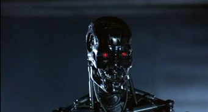
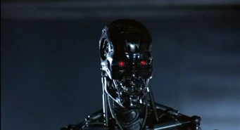

Терминатор/T-800

- Появления:
- Терминатор (фильм)
- Терминатор 2: Судный день
- Терминатор: Да придет спаситель
- Терминатор: Генезис
- Терминатор: Тёмные судьбы
Актёр:
Арнольд Шварценеггер
T-800 — самая успешная серия роботов-терминаторов SkyNET. При подчеркнутой «устарелости» неоднократно превосходит более продвинутые модели (если не в мощи, то в общей полезности).
Броня
В основе Т-800 — каркас из титанового сплава, в общих чертах имитирующий скелет человека. Каркас неуязвим для стрелкового оружия, хотя может быть уничтожен нитроглицериновыми шашками. Так, в фильме "Терминатор" он выдержал 11 выстрелов из дробовика Кайла Риза, +1 в глаз, +1 в руку; взрыв у машины, аварию, расстрел из дробовика в погоне, аварию, расстрел в полицейском участке, столкновение с автопоездом, взрыв бензовоза, огонь. В фильме "Терминатор 2: Судный день" выдержал драки с Т-1000, расстрел полицией, а также был пробит насквозь стальной арматурой Т-1000. В фильме "Терминатор: Да придёт спаситель" Т-800 выдержал три выстрела из гранатомета Джона Коннора, несколько десятков выстрелов из огнестрельного оружия, падение на него нескольких тонн расплавленного метала (то, чего не выдержали Т-800 и Т-1000 в Т2), драку с Маркусом Райтом. В фильме "Терминатор: Генезис" рука Т-800 выдержала кислотный душ, который не смог выдержать Т-1000.
Вооружение
Встроенного вооружения не имеет, использует оружие людей. В стандартной комплектации вооружён плазменной винтовкой «Вестингауз» мощностью 40 киловатт. Может использовать иное доступное оружие. Может использовать оружие людей - плазменную винтовку (Валмет M 82).
Галерея
 
